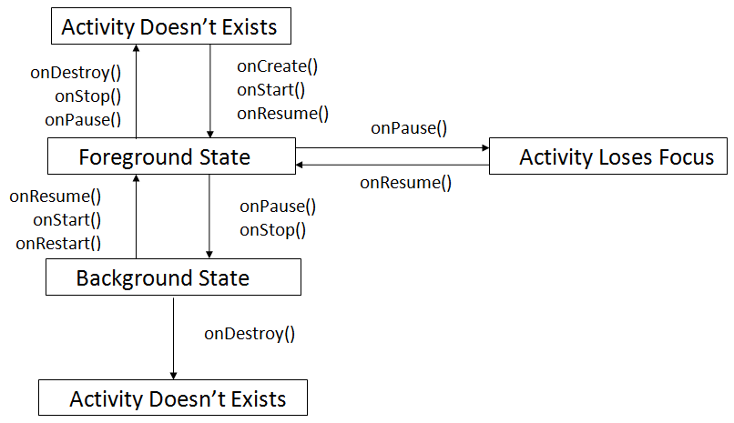

Activity:-
Activity represents a single screen with which a user can interact with.
For a .java class to qualify as an Activity it should extend the Activity class.
Activities in the system are managed as an activity stack.
When a new activity is started, it is placed on the top of the stack and becomes the running activity.
The previous activity always remains below it in the stack, and will not come to the foreground again until the new activity exits.
An activity essentially has 4 states:-
1. Foreground State:
If an activity is in the foreground of the screen (at the top of the stack), it is active or running.
2. Paused State:
If an activity has lost focus but is still visible (that is, a new non-full-sized or transparent activity has focus on top of your activity e.g. Opening a Dialog Box), it is in paused state. A paused activity is completely alive (it maintains all state and member information and remains attached to the window manager), but can be killed by the system in extreme low memory situations.
3. Background State:
If an activity is completely obscured by another activity, it is stopped. It still retains all state and member information, however, it is no longer visible to the user so its window is hidden and it will often be killed by the system when memory is needed elsewhere.
4. Destroyed State:
If an activity is paused or stopped, the system can drop the activity from memory by either asking it to finish, or simply killing its process. When it is displayed again to the user, it must be completely restarted and restored to its previous state.

Activity Life Cycle Methods:
onCreate():
Called when the activity is first created.
This is where you should do all of your normal static set up: create views, bind data to lists, etc.
This method also provides you with a Bundle containing the activity's previously frozen state, if there was one.
Always followed by onStart().
onRestart():
Called after your activity has been stopped, prior to it being started again.
Always followed by onStart().
onStart():
Called when the activity is becoming visible to the user.
Followed by onResume() if the activity comes to the foreground, or onStop() if it becomes hidden.
onResume():
Called when the activity will start interacting with the user.
At this point your activity is at the top of the activity stack, with user input going to it.
Always followed by onPause().
onPause():
Called when the system is about to start resuming a previous activity.
The paused activity does not receive user input and cannot execute any code .
Followed by either onResume() if the activity returns back to the front, or onStop() if it becomes invisible to the user.
onStop():
Called when the activity is no longer visible to the user, because another activity has been resumed and is covering this one.
This may happen either because a new activity is being started, an existing one is being brought in front of this one, or this one is being destroyed.
Followed by either onRestart() if this activity is coming back to interact with the user, or onDestroy() if this activity is going away.
onDestroy():
The final call you receive before your activity is destroyed.
This can happen either because the activity is finishing (someone called finish() on it, or because the system is temporarily destroying this instance of the activity to save space.